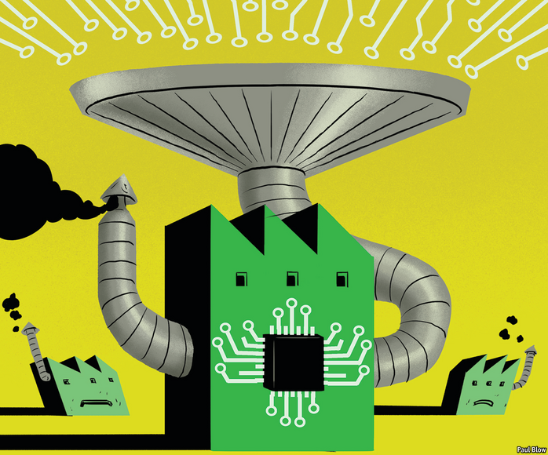
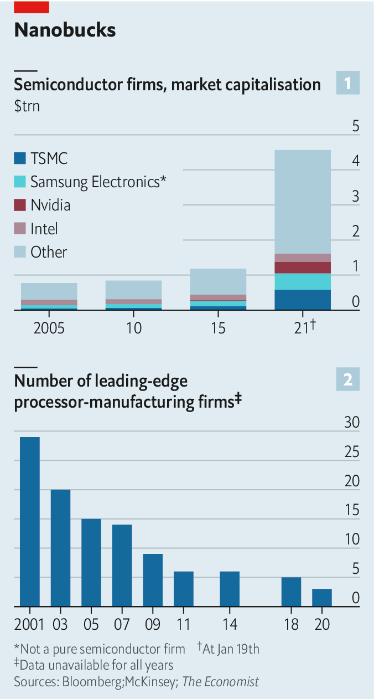
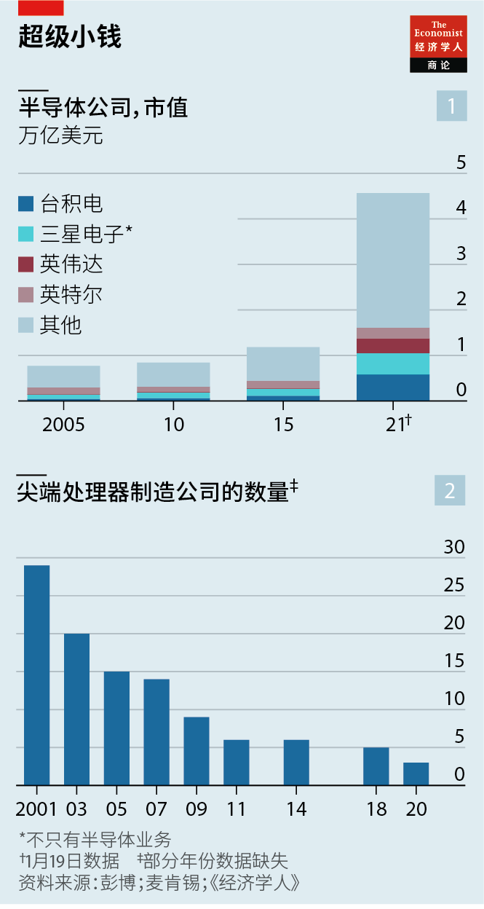
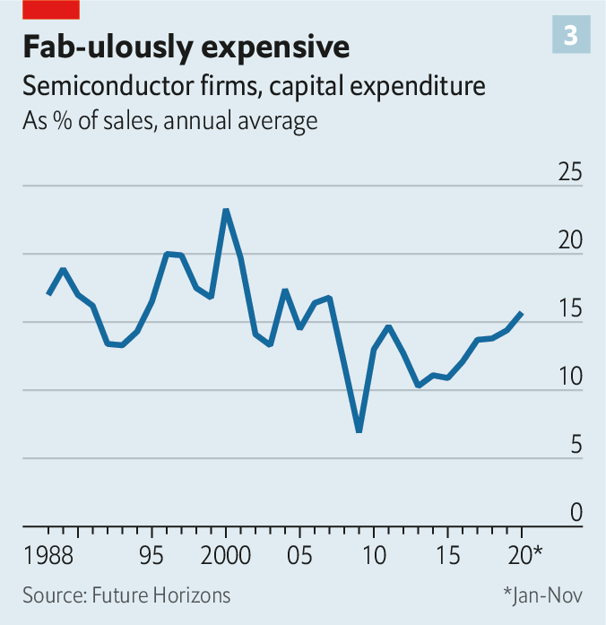
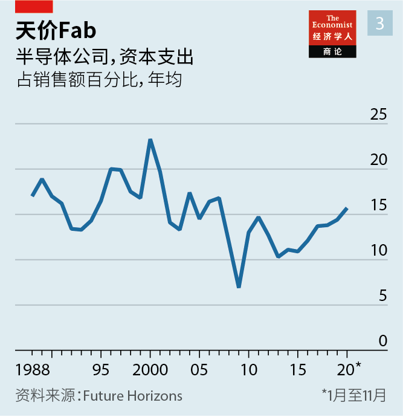

2021-02-01T15:48:27+00:00
Semiconductors
半导体
半導體
A new architecture
新架构
新架構
The global chip industry is becoming at once more diverse and more concentrated. The effects will be anything but nanoscopic
全球芯片业正变得既更多元又更集中。其影响绝不会微乎其微
全球芯片業正變得既更多元又更集中。其影響絕不會微乎其微
ON JANUARY 13TH Honda, a Japanese carmaker, said it had to shut its factory in Swindon, a town in southern England, for a while. Not because of Brexit, or workers sick with covid-19. The reason was a shortage of microchips. Other car firms are suffering, too. Volkswagen, which produces more vehicles than any other firm, has said it will make 100,000 fewer this quarter as a result. Like just about everything else these days—from banks to combine harvesters—cars cannot run without computers.
日本汽车制造商本田1月13日宣布不得不暂时关闭它在英格兰南部小镇斯温顿（Swindon）的工厂。原因不是英国脱欧或有工人感染新冠肺炎，而是微芯片短缺。其他汽车公司也遭遇了同样的难题。产量最大的大众表示，本季度将因此减产10万辆车。和如今从银行到联合收割机的几乎万事万物一样，离了计算机，汽车就无法运转。
日本汽車製造商本田1月13日宣布不得不暫時關閉它在英格蘭南部小鎮斯溫頓（Swindon）的工廠。原因不是英國脫歐或有工人感染新冠肺炎，而是微芯片短缺。其他汽車公司也遭遇了同樣的難題。產量最大的大眾表示，本季度將因此減產10萬輛車。和如今從銀行到聯合收割機的幾乎萬事萬物一樣，離了計算機，汽車就無法運轉。
The chipmaking industry is booming. The market capitalisation of the world’s listed semiconductor firms now exceeds $4trn, four times what they were worth five years ago (see chart 1). Chipmakers’ share prices have surged during the covid-19 pandemic, as work moved online and consumers turned to streaming and video games for succour.
芯片制造业景气大好。全球上市半导体公司的总市值已超过四万亿美元，是五年前的四倍（见图表1）。疫情期间，随着工作转移到线上、消费者转向流媒体和电子游戏寻求慰藉，芯片制造商的股价飙升。
芯片製造業景氣大好。全球上市半導體公司的總市值已超過四萬億美元，是五年前的四倍（見圖表1）。疫情期間，隨着工作轉移到線上、消費者轉向流媒體和電子遊戲尋求慰藉，芯片製造商的股價飆升。
This has propelled a wave of dealmaking. In September Nvidia, which designs powerful chips for gaming and artificial intelligence (AI), said it would buy Arm, a Britain-based company whose blueprints are used in nearly all smartphones, for $40bn. In October AMD, which makes blueprints for graphics and general-purpose chips, announced another megadeal—to acquire Xilinx, a maker of reprogrammable chips, for $35bn.
这推动了一轮交易潮。去年9月，为游戏和人工智能（AI）设计高性能芯片的英伟达（Nvidia）表示，将以400亿美元的价格收购总部位于英国的安谋（Arm）。几乎所有智能手机都使用安谋的芯片设计。10月，为图形和通用芯片提供蓝图的AMD宣布了另一项巨额交易——以350亿美元的价格收购制造可编程芯片的赛灵思（Xilinx）。
這推動了一輪交易潮。去年9月，為遊戲和人工智能（AI）設計高性能芯片的英偉達（Nvidia）表示，將以400億美元的價格收購總部位於英國的安謀（Arm）。幾乎所有智能手機都使用安謀的芯片設計。10月，為圖形和通用芯片提供藍圖的AMD宣布了另一項巨額交易——以350億美元的價格收購製造可編程芯片的賽靈思（Xilinx）。
Silicon splurge
硅潮
硅潮
Capital spending, too, is rising. Samsung, a South Korean conglomerate, wants to invest more than $100bn over ten years in its chip business (although some of that will go to its memory chips used in things like flash drives rather than microprocessors). On January 14th Taiwan Semiconductor Manufacturing Company (TSMC)—which turns blueprints into silicon on behalf of firms like AMD and Nvidia—stunned markets when it increased its planned capital spending for 2021 from $17.2bn to as much as $28bn, in anticipation of strong demand. That is one of the largest budgets of any private firm in the world.
资本支出也在攀升。韩国企业集团三星希望在未来十年对其芯片业务投资超过1000亿美元（不过其中一部分将投入到用于闪存驱动器等设备的存储芯片而非微处理器上）。1月14日，为AMD和英伟达等公司代工、将蓝图变成芯片的台积电宣布，由于预期需求强劲，将把2021年的计划资本支出从172亿美元猛增至280亿美元，令市场震惊。如此规模的预算在世界上所有私人公司中位列前茅。
資本支出也在攀升。韓國企業集團三星希望在未來十年對其芯片業務投資超過1000億美元（不過其中一部分將投入到用於閃存驅動器等設備的存儲芯片而非微處理器上）。1月14日，為AMD和英偉達等公司代工、將藍圖變成芯片的台積電宣布，由於預期需求強勁，將把2021年的計劃資本支出從172億美元猛增至280億美元，令市場震驚。如此規模的預算在世界上所有私人公司中位列前茅。
All this is happening amid a confluence of big trends that are realigning chipmaking. At one end the industry is a hive of competition and innovation. Established chip designs, including those from AMD, Nvidia and Intel, the world’s biggest chipmaker by revenue, are being challenged by new creations. Web giants such as Amazon and Google, big customers of the incumbents, are cooking up their own designs. They are joined by a gaggle of startups, eager to capitalise on demand for hardware tuned for the needs of AI, networking or other specialist applications.
这一切发生之时，几大正在重组芯片制造业的趋势在汇集。在行业的一端，竞争激烈，创新不断。AMD、英伟达和英特尔等全球收入最高的芯片制造商的既有设计正面临新设计的挑战。它们的大客户亚马逊和谷歌等网络巨头正在酝酿自己的设计。一大波创业公司也加入进来，迫切想要迎合市场需求，开发专为AI、联网或其他专门应用而设计的硬件。
這一切發生之時，幾大正在重組芯片製造業的趨勢在彙集。在行業的一端，競爭激烈，創新不斷。AMD、英偉達和英特爾等全球收入最高的芯片製造商的既有設計正面臨新設計的挑戰。它們的大客戶亞馬遜和谷歌等網絡巨頭正在醞釀自己的設計。一大波創業公司也加入進來，迫切想要迎合市場需求，開發專為AI、聯網或其他專門應用而設計的硬件。
All this would be unequivocally great news for everyone, were it not for what is happening at the other end—in the factories where those designs are turned into electronic circuits etched on shards of silicon. The ballooning costs of keeping up with advancing technology mean that the explosion of chip designs is being funnelled through a shrinking number of companies capable of actually manufacturing them (see chart 2). Only three firms in the world are able to make advanced processors: Intel, TSMC, whose home is an earthquake-prone island which China claims as its territory, and Samsung of South Korea, with a nuclear-armed despotic neighbour to the north. The Semiconductor Industry Association, an American trade body, reckons that 80% of global chipmaking capacity now resides in Asia.
要不是因为在行业的另一端——那些在硅片上刻蚀电路来实现设计的工厂——正在发生的事，那么对于所有人来说这一切无疑都会是大好消息。要跟上技术进步的制造成本在飞涨，其结果是，虽然芯片设计呈爆炸式增长，有能力真的把它们造出来的公司却越来越少（见图表2）。目前世界上只有三家公司能够生产先进处理器：英特尔、台积电（位于中国宣誓主权的地震多发的海岛上）和韩国的三星（它北边的邻居是一个拥有核武器的专制国家）。据美国的行业组织半导体行业协会（Semiconductor Industry Association）估计，如今全球芯片制造产能的80％集中在亚洲。
要不是因為在行業的另一端——那些在硅片上刻蝕電路來實現設計的工廠——正在發生的事，那麼對於所有人來說這一切無疑都會是大好消息。要跟上技術進步的製造成本在飛漲，其結果是，雖然芯片設計呈爆炸式增長，有能力真的把它們造出來的公司卻越來越少（見圖表2）。目前世界上只有三家公司能夠生產先進處理器：英特爾、台積電（位於中國宣誓主權的地震多發的海島上）和韓國的三星（它北邊的鄰居是一個擁有核武器的專制國家）。據美國的行業組織半導體行業協會（Semiconductor Industry Association）估計，如今全球芯片製造產能的80％集中在亞洲。
The vanguard may soon be down to two. Intel, which has pushed the industry’s cutting edge for 30 years, has stumbled. On January 18th news reports suggested that the company (which was due to report its latest quarterly results on January 21st, after The Economist went to press) may begin outsourcing some of its own production to TSMC, which has overtaken it.
三个领头羊可能很快会减少到两个。30年来一直在推动行业前沿发展的英特尔如今举步维艰。根据1月18日的新闻报道，该公司（在本期《经济学人》付印后的1月21日公布其最新季度业绩）可能会开始将自己的部分芯片生产外包给台积电。台积电的市值已经超过了英特尔。
三個領頭羊可能很快會減少到兩個。30年來一直在推動行業前沿發展的英特爾如今舉步維艱。根據1月18日的新聞報道，該公司（在本期《經濟學人》付印後的1月21日公布其最新季度業績）可能會開始將自己的部分芯片生產外包給台積電。台積電的市值已經超過了英特爾。
And the world economy’s foundational industry looks poised to polarise further, into ever greater effervescence in design and ever more concentrated production. This new architecture has far-reaching consequences for chipmakers and their customers—which, in this day and age, includes virtually everyone.
而这一世界经济的基础产业看起来势必将进一步两极分化：设计会更活跃，生产会更集中。这种新的架构将对芯片制造商及其客户产生深远影响——在今时今日，也就是对几乎所有人都有深远影响。
而這一世界經濟的基礎產業看起來勢必將進一步兩極分化：設計會更活躍，生產會更集中。這種新的架構將對芯片製造商及其客戶產生深遠影響——在今時今日，也就是對幾乎所有人都有深遠影響。
Start with the diversification. For years technology companies bought chips off the shelf. In its 44-year history Apple has procured microprocessors for its desktops and laptops from MOS Technology, Motorola, IBM, and finally Intel. Soon after the launch of the original iPhone in 2007, however, the firm decided to go it alone. Later iterations of the smartphone employed its own designs, manufactured first by Samsung, and later by TSMC. That approach proved so successful that in 2020 Apple announced that it would replace Intel’s products with tailor-made ones in its immobile Mac computers, too.
先说多元化。科技公司多年来都是购买成品芯片。在苹果44年的历史中，它先后从MOS科技、摩托罗拉、IBM，最后是英特尔购买用于台式电脑和笔记本电脑的微处理器。但在2007年推出首款iPhone后不久，苹果决定自己研制芯片。后续的iPhone都采用了苹果自己的设计，先是由三星制造，后转为台积电。这种做法如此成功，苹果在2020年宣布还将在台式Mac电脑中用自己的定制芯片代替英特尔的成品。
先說多元化。科技公司多年來都是購買成品芯片。在蘋果44年的歷史中，它先後從MOS科技、摩托羅拉、IBM，最後是英特爾購買用於台式電腦和筆記本電腦的微處理器。但在2007年推出首款iPhone後不久，蘋果決定自己研製芯片。後續的iPhone都採用了蘋果自己的設計，先是由三星製造，後轉為台積電。這種做法如此成功，蘋果在2020年宣布還將在台式Mac電腦中用自己的定製芯片代替英特爾的成品。
Two years earlier Amazon Web Services, the e-commerce giant’s cloud-computing unit, began replacing some Intel chips in its data centres with its own “Graviton” designs. Amazon claims its chips are up to 40% more cost-efficient than Intel’s. Around the same time Google began offering its custom “Tensor Processing Unit” chip, designed to boost AI calculations, to its cloud clients. Baidu, a Chinese search giant, claims its “Kunlun” AI chips outpace offerings from Nvidia. Microsoft, the third member of the Western cloud-computing triumvirate, is rumoured to be working on chip designs of its own.
两年前，电子商务巨头亚马逊的云计算部门AWS开始用自己的“Graviton”设计替换其数据中心中的部分英特尔芯片。亚马逊称其芯片的性价比高出英特尔芯片40％。大约在同一时间，谷歌开始向其云客户提供定制的旨在提高AI计算能力的“张量处理单元”（TPU）芯片。中国的搜索巨头百度称其“昆仑”AI芯片比英伟达的产品速度更快。有传言称，在西方云计算三巨头中排行老三的微软正在加紧设计自己的芯片。
兩年前，電子商務巨頭亞馬遜的雲計算部門AWS開始用自己的“Graviton”設計替換其數據中心中的部分英特爾芯片。亞馬遜稱其芯片的性價比高出英特爾芯片40％。大約在同一時間，谷歌開始向其雲客戶提供定製的旨在提高AI計算能力的“張量處理單元”（TPU）芯片。中國的搜索巨頭百度稱其“崑崙”AI芯片比英偉達的產品速度更快。有傳言稱，在西方雲計算三巨頭中排行老三的微軟正在加緊設計自己的芯片。
Clever startups in the field are securing billion-dollar valuations. Cerebras, an American firm which designs AI chips, has earned one of $1.2bn. A British rival called Graphcore, which has been working with Microsoft, was valued at $2.8bn in December. On January 13th Qualcomm, a firm best-known for its smartphone chips, paid $1.4bn for Nuvia, a startup staffed by veterans of Apple’s in-house chip-design team.
这个领域里出色的创业公司正在取得数十亿美元的估值。设计AI芯片的美国公司Cerebras已获得12亿美元的估值。它的英国竞争对手Graphcore一直在与微软合作，在12月估值28亿美元。1月13日，以智能手机芯片闻名的高通公司以14亿美元收购了Nuvia，后者是由苹果芯片设计团队的前资深成员组建的一家创业公司。
這個領域裡出色的創業公司正在取得數十億美元的估值。設計AI芯片的美國公司Cerebras已獲得12億美元的估值。它的英國競爭對手Graphcore一直在與微軟合作，在12月估值28億美元。1月13日，以智能手機芯片聞名的高通公司以14億美元收購了Nuvia，後者是由蘋果芯片設計團隊的前資深成員組建的一家創業公司。
Custom silicon was an iffy proposition a decade ago. General-purpose chips were getting better quickly thanks to Moore’s law, which holds that the number of components that can be crammed into a silicon chip should double every two years or so. Today the Moorean metronome is breaking down, as quirks of fundamental physics interfere with components measured in nanometres (billionths of a metre). Each tick now takes closer to three years than two, notes Linley Gwennap, who runs the Linley Group, a research firm, and offers fewer benefits than it used to.
定制芯片在十年前还是个让人拿不准的主张。根据摩尔定律，每个芯片上可容纳的元件数量应该能够每两年左右增加一倍，通用芯片的性能因而迅速提升。如今摩尔定律正在失效，因为尺度以纳米（十亿分之一米）计的元件正在受到基础物理学规律的限制。研究公司Linley Group的主管林利·格温纳普（Linley Gwennap）指出，现在芯片制程升级一次所需的时间不是两年，而是接近三年，而且带来的好处也变少了。
定製芯片在十年前還是個讓人拿不準的主張。根據摩爾定律，每個芯片上可容納的元件數量應該能夠每兩年左右增加一倍，通用芯片的性能因而迅速提升。如今摩爾定律正在失效，因為尺度以納米（十億分之一米）計的元件正在受到基礎物理學規律的限制。研究公司Linley Group的主管林利·格溫納普（Linley Gwennap）指出，現在芯片製程升級一次所需的時間不是兩年，而是接近三年，而且帶來的好處也變少了。
That makes tweaking designs to eke out performance gains more attractive, especially for big, vertically integrated firms. No one knows better than Apple exactly how its chips will interact with the rest of an iPhone’s hardware and software. Cloud-computing giants have reams of data about exactly how their hardware is used, and can tweak their designs to match.
这使得改进设计以维持性能的提升变得更具吸引力，尤其是对于垂直整合的大公司而言。没有谁比苹果更确切了解自己的芯片将如何与iPhone其他的硬件和软件交互作用。云计算巨头拥有大量有关自身硬件运作的确切数据，因而可以据此调整设计来匹配需求。
這使得改進設計以維持性能的提升變得更具吸引力，尤其是對於垂直整合的大公司而言。沒有誰比蘋果更確切了解自己的芯片將如何與iPhone其他的硬件和軟件交互作用。雲計算巨頭擁有大量有關自身硬件運作的確切數據，因而可以據此調整設計來匹配需求。
And whereas designing your own chips once meant having to make them as well, that is no longer true. These days most designers outsource the manufacturing process to specialists such as TSMC or GlobalFoundries, an American firm. Removing the need to own factories cuts costs drastically. A raft of automated tools smooths the process. “It’s not quite as simple as designing a custom T-shirt on Etsy,” says Macolm Penn, who runs Future Horizons, another chip-industry analyst. But it isn’t a world away, either.
此外，从前自己设计芯片意味着生产也得自己来，但如今不再如此。现在大多数设计公司都将制造外包给台积电或美国公司格芯（GlobalFoundries）等专业工厂。不需要自建工厂大大降低了成本。大量自动化工具让生产过程变得更顺畅。“倒也不像在Etsy上设计定制T恤那么简单。”另一家芯片行业分析公司Future Horizons的主管马尔科姆·佩恩（Macolm Penn）说。但也不是难于登天。
此外，從前自己設計芯片意味着生產也得自己來，但如今不再如此。現在大多數設計公司都將製造外包給台積電或美國公司格芯（GlobalFoundries）等專業工廠。不需要自建工廠大大降低了成本。大量自動化工具讓生產過程變得更順暢。“倒也不像在Etsy上設計定製T恤那麼簡單。”另一家芯片行業分析公司Future Horizons的主管馬爾科姆·佩恩（Macolm Penn）說。但也不是難於登天。
Although designing chips is now easier than ever, making them has never been harder. Keeping up with Moore’s law, even as it slows, requires spending vast—and growing—sums on factories stuffed with ultra-advanced equipment: plasma-etching kit, vapour-deposition devices and 180-tonne lithography machines the size of a double-decker bus. After falling as a proportion of overall revenue, the chip industry’s capital spending is ticking up again (see chart 3). In absolute terms, the cost of high-tech “fabs”, as chip factories are known, has grown relentlessly—with no end in sight.
尽管现在设计芯片比以往任何时候都容易，但生产芯片却变得前所未有地难。即便是要跟上摩尔定律业已放缓的速度，也得投入巨额资金（且数额还在不断上升）来建设配备最尖端设备的工厂。这些设备包括离子蚀刻机、气相沉积设备，以及180吨重、有双层巴士那么大的光刻机等。芯片行业的资本支出占总收入的比例一度下降，现在又开始回升（见图表3）。从绝对数字看，被称作fab的高科技芯片代工厂的成本不断增长，而且看不到头。
儘管現在設計芯片比以往任何時候都容易，但生產芯片卻變得前所未有地難。即便是要跟上摩爾定律業已放緩的速度，也得投入巨額資金（且數額還在不斷上升）來建設配備最尖端設備的工廠。這些設備包括離子蝕刻機、氣相沉積設備，以及180噸重、有雙層巴士那麼大的光刻機等。芯片行業的資本支出佔總收入的比例一度下降，現在又開始回升（見圖表3）。從絕對數字看，被稱作fab的高科技芯片代工廠的成本不斷增長，而且看不到頭。
Today’s state-of-the-art is five-nanometre chips (though “5nm” no longer refers to the actual size of transistors as earlier generations did). Both Samsung and TSMC began churning them out in 2020. Their 3nm successors are due in 2022, with 2nm pencilled in a few years later.
当今最先进的是5纳米制程芯片（尽管“5纳米”不再像前几代制程那样指晶体管的实际尺寸）。三星和台积电都在2020年开始量产这种芯片。3纳米版本芯片预定2022年量产，2纳米定于几年后。
當今最先進的是5納米製程芯片（儘管“5納米”不再像前幾代製程那樣指晶體管的實際尺寸）。三星和台積電都在2020年開始量產這種芯片。3納米版本芯片預定2022年量產，2納米定於幾年後。
Intel outside
英特尔掉出圈
英特爾掉出圈
At the turn of the millennium, a cutting-edge factory might have cost $1bn. A report in 2011 from McKinsey, a firm of management consultants, put the typical cost of an advanced fab at $3bn-4bn. More recently, TSMC’s 3nm factory, completed in 2020, in southern Taiwan, cost $19.5bn. The firm is already pondering another for 2nm chips, which will almost certainly be more. Intel’s stumbles have left it marooned at 10nm—and its boss, Bob Swan, out of a job. His incoming replacement, Pat Gelsinger, will need to decide if the company, which, unlike TSMC, also designs its chips, wants to keep making them. Potential new entrants face enormous barriers to entry. The economics of fabs pushes these up higher with every technological advance.
世纪之交时，一座尖端代工厂的造价可能在10亿美元。管理咨询公司麦肯锡2011年的一份报告称，一座先进代工厂的成本一般为三四十亿美元。更近些时候，台积电于2020年在台湾南部建成的3纳米工厂耗资195亿美元。台积电已经在考虑为2纳米芯片另外兴建一个工厂，几乎可以肯定会花费更多。英特尔的失误让它在10纳米制程上打转，也让老板鲍勃·斯旺（Bob Swan）丢了工作。即将接任的帕特·格辛格（Pat Gelsinger）将需要决定公司是否还想继续生产芯片——与台积电不同，英特尔同时还设计芯片。潜在的新进者面临巨大的壁垒。随着每一次技术进步，代工厂的巨大成本还在不断加高这些壁垒。
世紀之交時，一座尖端代工廠的造價可能在10億美元。管理諮詢公司麥肯錫2011年的一份報告稱，一座先進代工廠的成本一般為三四十億美元。更近些時候，台積電於2020年在台灣南部建成的3納米工廠耗資195億美元。台積電已經在考慮為2納米芯片另外興建一個工廠，幾乎可以肯定會花費更多。英特爾的失誤讓它在10納米製程上打轉，也讓老闆鮑勃·斯旺（Bob Swan）丟了工作。即將接任的帕特·格辛格（Pat Gelsinger）將需要決定公司是否還想繼續生產芯片——與台積電不同，英特爾同時還設計芯片。潛在的新進者面臨巨大的壁壘。隨着每一次技術進步，代工廠的巨大成本還在不斷加高這些壁壘。
That matters. Not all chipmaking requires cutting-edge technology. Cars mostly use older, duller semiconductors. Miniaturisation may seem less of an imperative in roomy data centres. But it is crucial: there are some computations that only the most powerful chips can tackle.
这一点很重要。并非所有芯片制造都需要尖端技术。汽车大多使用技术较旧、智能程度较低的半导体。数据中心空间充足，微型化看起来似乎不是紧要任务。但它确实非常关键，因为有些计算只能由最强大的芯片来处理。
這一點很重要。並非所有芯片製造都需要尖端技術。汽車大多使用技術較舊、智能程度較低的半導體。數據中心空間充足，微型化看起來似乎不是緊要任務。但它確實非常關鍵，因為有些計算只能由最強大的芯片來處理。
And demand for these is likely to grow as silicon infuses products from thermostats to tractors in the uber-connected “Internet of Things”. Between them TSMC and Samsung customers are already a “Who’s Who” of big tech—Apple, Amazon, Google, Nvidia, Qualcomm (and soon, if the news reports are true, Intel itself). As things like cars become more computerised and go electric, the chips that go into them will become more advanced, too. Tesla, an American maker of electric cars, already relies on TSMC’s 7nm fabs to make its in-house self-driving chips.
而随着芯片进入从恒温器到拖拉机等高度互联的各种物联网产品中，对这类最强大芯片的需求应该会增长。台积电和三星的客户包括苹果、亚马逊、谷歌、英伟达、高通，已然是大型科技公司的“名企榜”（如果那些新闻报道属实，不久后英特尔也将成为其中之一）。随着汽车等产品变得更加计算机化和电动化，植入其中的芯片也将变得更先进。美国电动汽车制造商特斯拉已经将自己设计的无人驾驶芯片交给台积电的7纳米代工厂生产。
而隨着芯片進入從恆溫器到拖拉機等高度互聯的各種物聯網產品中，對這類最強大芯片的需求應該會增長。台積電和三星的客戶包括蘋果、亞馬遜、谷歌、英偉達、高通，已然是大型科技公司的“名企榜”（如果那些新聞報道屬實，不久後英特爾也將成為其中之一）。隨着汽車等產品變得更加計算機化和電動化，植入其中的芯片也將變得更先進。美國電動汽車製造商特斯拉已經將自己設計的無人駕駛芯片交給台積電的7納米代工廠生產。
Asia’s nanoscale duopoly remains fiercely competitive, as Samsung and TSMC keep each other on their toes. The Taiwanese firm’s operating margins have been more or less steady since 2005, when 15 other firms were operating at the cutting edge. But the logical endpoint of the relentless rise in manufacturing costs is that, at some point, one company, in all likelihood TSMC, could be the last advanced fab standing. For years, says an industry veteran, tech bosses mostly ignored the problem in the hope it would go away. It has not.
由于三星和台积电相互较劲不得放松，这一亚洲的纳米级双寡头继续激烈竞争。台积电的营业利润自2005年以来基本保持稳定，在那一年有其他15家公司同处于前沿地位。但随着制造成本不断攀升，一个合逻辑的结果是到了某个时候可能只剩下一家仍然存活的先进代工厂——十有八九是台积电。一位业内资深人士说，多年来，科技公司的老板们大多不理会这个问题，寄希望于它自行消失。然而并没有。
由於三星和台積電相互較勁不得放鬆，這一亞洲的納米級雙寡頭繼續激烈競爭。台積電的營業利潤自2005年以來基本保持穩定，在那一年有其他15家公司同處於前沿地位。但隨着製造成本不斷攀升，一個合邏輯的結果是到了某個時候可能只剩下一家仍然存活的先進代工廠——十有八九是台積電。一位業內資深人士說，多年來，科技公司的老闆們大多不理會這個問題，寄希望於它自行消失。然而並沒有。
Those worries are sharpened by the industry’s growing political importance. As part of its economic war against China, America has sought to deny Chinese firms the ability to build leading-edge chip factories of their own. China has put semiconductors at the core of a multibillion-dollar plan to become self-sufficient in critical technologies by 2025—especially now that American sanctions have deprived it of some foreign imports.
芯片业在政治上日益重要，更加剧了这些担忧。作为对华经济战的一部分，美国试图让中国公司无法建立自己的尖端芯片工厂。中国制定了耗资数千亿美元的投资计划，以求在2025年之前实现关键技术的自给自足，半导体在其中占据核心地位——目前美国的制裁让中国无法从国外进口某些芯片，更令这一块变得尤为重要。
芯片業在政治上日益重要，更加劇了這些擔憂。作為對華經濟戰的一部分，美國試圖讓中國公司無法建立自己的尖端芯片工廠。中國制定了耗資數千億美元的投資計劃，以求在2025年之前實現關鍵技術的自給自足，半導體在其中佔據核心地位——目前美國的制裁讓中國無法從國外進口某些芯片，更令這一塊變得尤為重要。
The structural forces behind increased concentration are here to stay. America, worried about losing access to the most advanced factories, has given handouts to TSMC in return for a fab in Arizona. Samsung may expand the one it runs in Texas. Another package of subsidies and incentives is awaiting funding from Congress. The European Union, which has pockets of high technology in Belgium and the Netherlands, wants more of them. In December 17 EU countries agreed to spend tens of billions in post-pandemic stimulus cash to try to create leading-edge factories by the middle of the decade. The chip industry’s history suggests these sums will only get more eye-watering with time. ■
在背后推动生产集中度的结构性力量将继续存在。由于担心会无法使用最先进的代工厂，美国已向台积电提供优惠政策，换取它在亚利桑那州投资建厂。三星可能会扩大它在得克萨斯州的工厂。另一套补贴和激励措施正在等待国会拨款。欧盟在比利时和荷兰有一批高科技公司，它希望能出现更多。12月，欧盟17个成员国达成一致，在欧盟的疫情后刺激资金中支出数百亿欧元，试图在2025年之前建成先进的代工厂。芯片业的历史表明，未来这些投资数字只会变得更加高不可攀。
在背後推動生產集中度的結構性力量將繼續存在。由於擔心會無法使用最先進的代工廠，美國已向台積電提供優惠政策，換取它在亞利桑那州投資建廠。三星可能會擴大它在得克薩斯州的工廠。另一套補貼和激勵措施正在等待國會撥款。歐盟在比利時和荷蘭有一批高科技公司，它希望能出現更多。12月，歐盟17個成員國達成一致，在歐盟的疫情後刺激資金中支出數百億歐元，試圖在2025年之前建成先進的代工廠。芯片業的歷史表明，未來這些投資數字只會變得更加高不可攀。